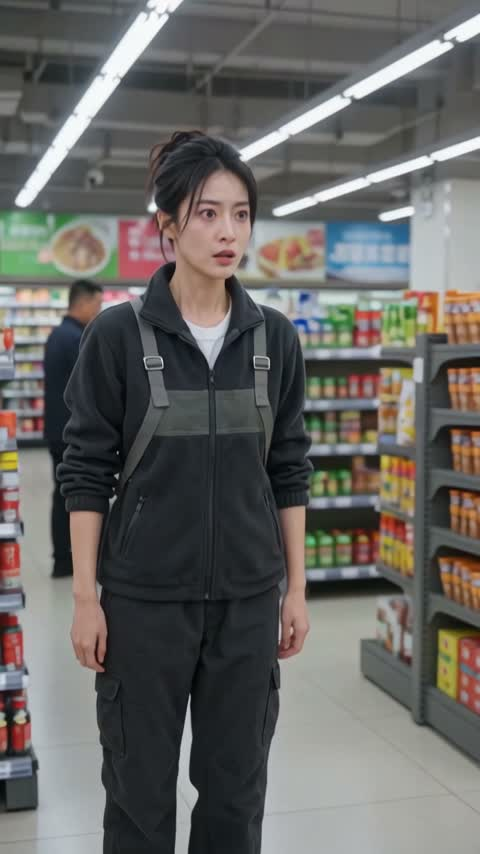
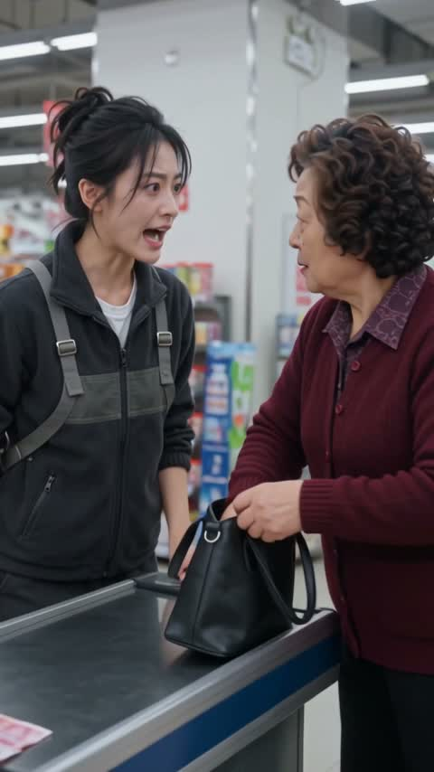
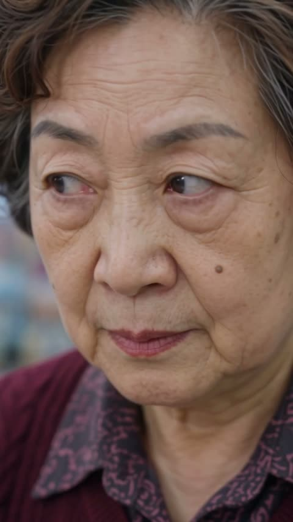
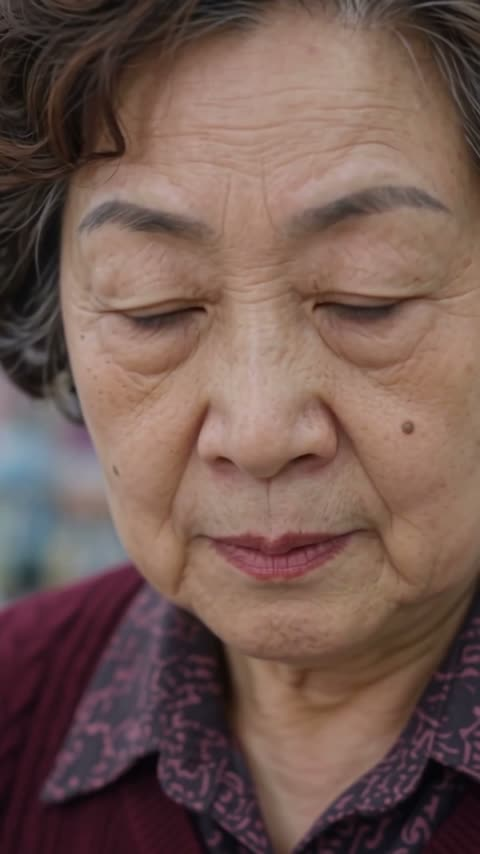

A / ACTION FIRST
先见取钱，再见发现。
抽屉和取钱动作先出现，随后切到陈初夏发现并冲向收银台。
设计意图 / 先把事件交代清楚，让“拿钱”成为直接的视觉钩子，再用人物反应把冲突接下去。
完整片长 6.04 秒 / 开头制作样片01 / MAIN PROJECT · 青鸽剧场
AI 短剧剧宣切片 /《从今天起，不给婆家当提款机》/ 2026.11
剧宣切片配乐版 · 22.22 秒 · 点击播放，有声
MY ROLE / 我负责什么
本页主展示为配乐版切片；对应的发布记录尚未完全核对。账号恢复过程留在文末补充，先看作品怎么做。
直接看一次具体决定 ↓01 / AUDIENCE & INTENT
前一部养老题材作品让我接触到较多中老年观众。运营新号时，我把约 40–70 岁人群作为优先考虑的目标受众，重点看家庭关系、婆媳冲突等容易产生代入的情节。
这次把收银台的取钱动作放到前面：观众先看见“谁在拿钱”，再跟着陈初夏的发现进入冲突。切片希望吸引观众继续看正剧，追剧引导也要放回角色和场景里检查。
约 40–70 岁是基于前期经验的受众判断，实际年龄分布待补后台画像。这里说明选题意图，不代表已验证的人群结果。
02 / FROM REFERENCE TO SCRIPT
READ / 拆对标
录屏后由 AI 辅助拆解，我再对照原片核看：开头发生了什么、人物情绪如何推进、追剧引导接在哪里。
REWRITE / 审初稿
检查人物关系、阵营与关键事实能否接回原剧。把开头写成具体动作，紧接人物反应，减少站着解释的时间。
MAKE / 生成与剪辑
用 Wan3 生成，检查动作、台词和情绪是否成立；筛选素材后剪辑、去重、发布，再跟踪数据。
对标原片与逐句改稿记录待补。本版用现有提示词和样片展示一次可核对的开场选择。
03 / ONE PRODUCTION DECISION
比较对象是两段样片的开场顺序。左片总长 6.04 秒，右片总长 30.02 秒；可先分别播放各自开头约 3 秒，再看完整样片。
A / ACTION FIRST
抽屉和取钱动作先出现，随后切到陈初夏发现并冲向收银台。
设计意图 / 先把事件交代清楚，让“拿钱”成为直接的视觉钩子，再用人物反应把冲突接下去。
完整片长 6.04 秒 / 开头制作样片B / LOOK FIRST
婆婆先观察周围，随后切到抽屉和手部动作。
设计意图 / 先让观众注意人物的试探与心虚，再揭示她具体要做什么，用表情为取钱动作蓄势。
完整片长 30.02 秒 / 较完整样片以上是结合样片与提示词对制作意图的解释。两片总时长不同，且对应发布记录、单篇后台尚未核对，现阶段无法比较两版开头的传播效果。
04 / PROMPT → FRAME → CUT
制作中遇到人物情绪起伏太平的问题。我把情绪落到动作次序、眼神方向和紧接的反应上，再对照生成画面检查。
提示词把 0–1.5 秒分配给取钱动作，再将 1.5–3 秒交给陈初夏的发现和冲向柜台。它把“事件 → 发现 → 对撞”写成连续反应。
抽屉、手和钞票是第一眼的信息中心。生成后需要核看动作是否清楚、反应能否接上，而不是只看单帧是否好看。


修改把开场细分为压低下巴、左右观察、视线落向抽屉，再硬切手部动作。“心虚”由可见的眼神和动作顺序承担。
截图仍保留“第一帧给动作特写”的旧总述，与后面的“先眼神、再手部”存在冲突。这是本次材料里需要清理的提示词残留。画面呈现以实际样片为准，提示词不等同于最终执行结果。


05 / DELIVERABLES & REFLECTION
已完成并陆续发布新剧切片，保留两种开场样片、提示词截图及可复用的提示词流程。账号持续更新。
以下为全账号数据 / 2026 年 11 月 10–16 日 / 非本页样片成绩
后台支持这一周全账号累计播放 48,141，以及 11 月 16 日全账号 307 条评论、37 次分享。
把样片、实际发布版本和单篇后台一一对应；再看开场是否让观众看懂事件、人物反应是否够强，并结合实际发布表现继续调整。
本页不把账号总播放归因于某条样片，也不判断 A、B 哪版传播更好。尚缺对应发布链接、单篇后台和受众画像。
按本人记录，账号出现降级提示后，我隐藏视频并申诉，先用原创视频试发，再恢复新剧更新。现有记录支持恢复期间播放回升，正式申诉结果待补。自身互动对推荐的独立影响没有验证。
这一过程属于运营补充，不作为本次开场决策有效性的证明。
依据《个人母资料库》正文定稿（2026.11.17），及青鸽剧场 06、07、11–13、03 号证据文件整理。制作意图为结合材料的解释；现有对标原片、逐句改稿记录、提示词版本对应关系仍待补齐核对。